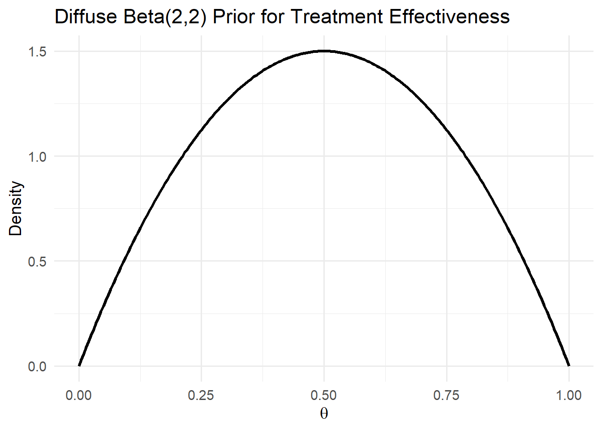
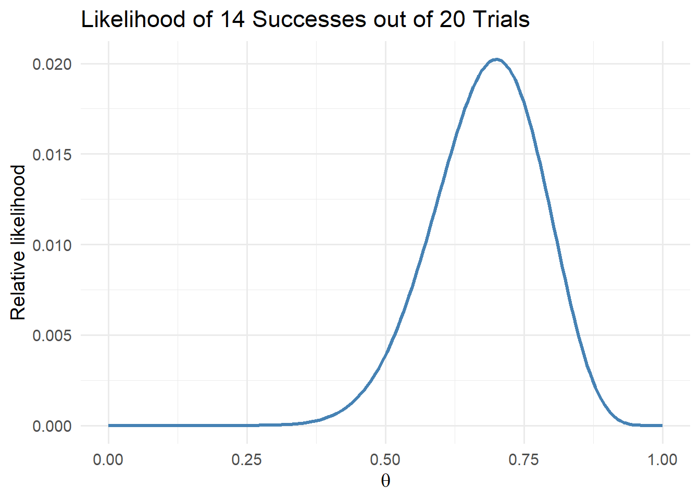
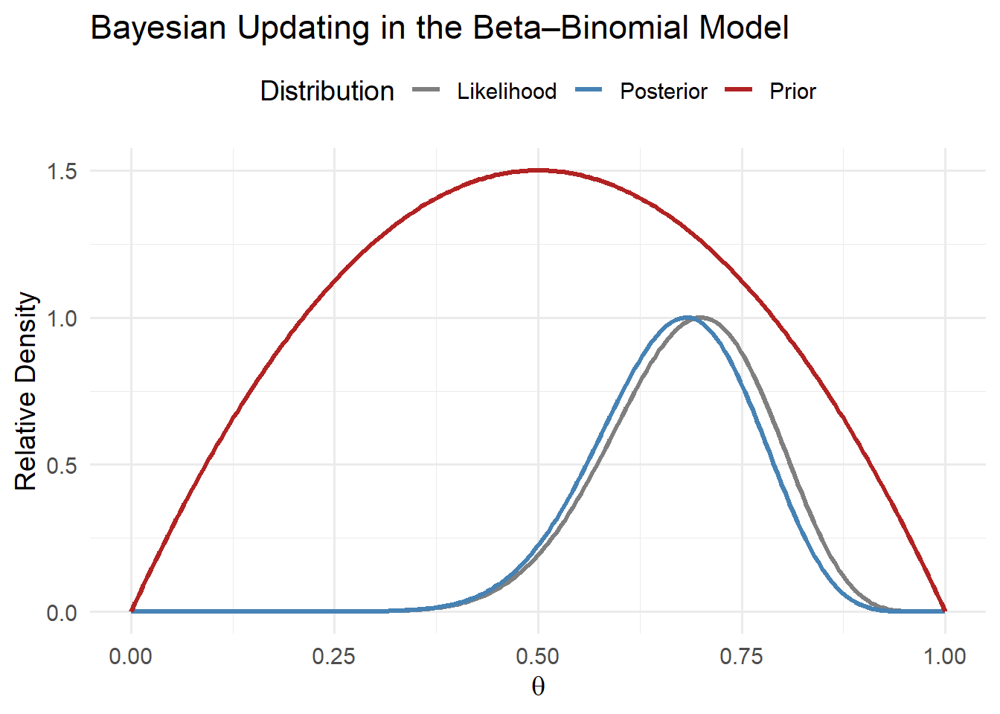

Physician Learning
Motivation
Consequences of physician agency:
- Patients subjected to information frictions or financial incentives of physicians
- The types of care people receive will depend on the physician
- Potential variation in health care utilization and spending across and even within markets
Motivation
Consequences of physician agency:
- Patients subjected to information frictions or financial incentives of physicians
- The types of care people receive will depend on the physician
- Potential variation in health care utilization and spending across and even within markets
Motivation
- Physicians don’t all have the exact same information
- May depend on…
- Learning over time (exposure to different patients and different treatment options)
- Training and Location (peers)
- Ownership structure (employee of hospital, large group, or self-employed)
Roadmap
- Bayes’ Rule
- Beta-Binomial learning model
- Illustration
- Application to physician learning
Bayes’ Rule
Basics
- Provides a systematic way to incorporate evidence to form updated beliefs
- Combines existing belief (i.e., prior) with new evidence (i.e., likelihood) to form an updated belief (i.e., posterior)
\[P(A|B) = \frac{P(B|A) \times P(A)}{P(B)}\]
Simple example
- Suppose 1% of a population has a disease
- Diagnostic test with 99% accuracy: correctly identifies disease when it is present and correctly rules it out when it is absent
- If a patient tests positive, what is the probability they actually have the disease?
Simple example
We know from the setup that:
- \(P(\text{Disease}) = 0.01\)
- \(P(\text{No Disease}) = 0.99\)
- \(P(\text{Positive} | \text{Disease}) = 0.99\) (sensitivity)
- \(P(\text{Negative} | \text{No Disease}) = 0.99\) (specificity)
- \(P(\text{Positive} | \text{No Disease}) = 0.01\)
- \(P(\text{Positive}) = Pr(P|D) Pr(D) + Pr(P | ND) Pr(ND)\)
- \(P(\text{Positive}) = (0.99)(0.01) + (0.01)(0.99) = 0.0198\)
Simple example
We can then update according to Bayes’ rule: \[Pr(D | P) =\frac{Pr(P| D) \times Pr(D)}{Pr(P)} = 0.99 * 0.01 / 0.0198 \approx 0.50\]
So even though the test is highly accurate, the low baseline probability means that a positive result still only implies a 50% probability of actually having the illness.
Generalizing from events to distributions
- Often need to think about distributions of possible values (e.g., a physician’s belief distribution over a treatment’s effectiveness)
- Bayes’ rule generalizes to:
\[ P(\theta | y) = \frac{P(y | \theta) \times P(\theta)}{P(y)} \propto P(y | \theta) \times P(\theta) \]
The Beta-Binomial Learning Model
Setup
- Agent: Economic agent who is trying to learn about an uncertain parameter, denoted \(\theta\) (e.g., physician wants to identify the best treatment)
- Beliefs: Agent’s initial belief about \(\theta\) is represented by a prior probability distribution, denoted \(P(\theta)\) (e.g., physician’s initial belief about the quality of a given treatment)
- Observation: Agent collects new data, denoted \(y\), which provides information about \(\theta\) (e.g., physician observes patient outcomes from treatment)
Bayesian updating
Given prior beliefs about treatment quality, \(P(\theta\)), and observed outcomes \(y\), the physician updates their belief on the quality of treatment using:
\[\begin{align} P(\theta|y) &= \frac{P(y|\theta) \times P(\theta)}{P(y)} \\ & \propto P(y|\theta) \times P(\theta) \end{align}\]
- \(P(\theta | y)\) is the updated belief (posterior distribution) about the effectiveness of treatment after observing outcomes
- \(P(y | \theta)\) is probability of outcome \(y\) given the effectiveness \(\theta\) (the likelihood)
- \(P(y)\) is the marginal probability of patient outcome \(y\)
- typically use “proportional to” expression, \(\propto\), to focus on relative probabilities and avoid complications from the normalization \(P(y)\)
Intuition
- Physician is considering a new treatment for a certain condition
- Initial belief might be “diffuse”, with equal probability assigned to all possible outcomes on the \([0,1]\) interval (represented by a uniform distribution)
- As the physician treats patients and observes outcomes, they update their beliefs using Bayes’ rule
The Binomial Distribution
- Physician treats \(n\) patients with a new therapy and observes \(s\) patients who improve
- Each case is independent and has the same probability of success \(\theta\)
- Likelihood follows a binomial distribution (series of Bernoulli trials with fixed probability of success)
\[P(y = s | n, \theta) = {n \choose s} \theta^{s} (1 - \theta)^{n - s}\]
The Beta Distribution
- The Beta distribution is governed by its “shape” parameters, \(\alpha\) and \(\beta\)
\[P(\theta) = \frac{\theta^{\alpha-1} (1 - \theta)^{\beta-1} }{\tilde{B}(\alpha, \beta)},\] where \(\tilde{B}(\alpha, \beta)\) is a normalization constant to ensure the PDF integrates to 1.
- Mean and variance of Beta distribution:
\[ E[\theta] = \frac{\alpha}{\alpha + \beta}, \quad Var(\theta) = \frac{\alpha \beta}{(\alpha + \beta)^2 (\alpha + \beta + 1)}. \]
- \(\alpha = \beta = 1\) reflects uniform priors; \(\alpha > \beta\) shifts beliefs to higher values of \(\theta\) (optimism); \(\alpha < \beta\) shifts belief toward lower values of \(\theta\) (skepticism).
- Beta distribution is the conjugate prior for the Binomial distribution
Posterior distribution
\[\begin{align} P(\theta | y) &= \frac{P(y| \theta) P(\theta)}{P(y)} \\ & = \frac{ {n \choose s} \theta^{s} (1 - \theta)^{n - s} \theta^{\alpha-1} (1 - \theta)^{\beta-1} } { \tilde{B}(\alpha, \beta) } \\ & = \frac{ {n \choose s} \theta^{\alpha+s-1} (1 - \theta)^{\beta+n-s-1} } { \tilde{B}(\alpha, \beta) } \\ & \propto Beta(\alpha+s, \beta + n - s) \end{align}\]
- \({n \choose s}\) and \(\tilde{B}(\alpha, \beta)\) are just normalization constants, so we can ignore them
- reduces to a Beta distribution with shape parameters \(\alpha+s\) and \(\beta + n - s\).
Illustration
The Beta Prior
Binomial Likelihood

Posterior
With \(\alpha_0 = 2\) and \(\beta_0 = 2\), the posterior parameters become, \(\alpha_{1} = \alpha_{0} + s = 16\) and \(\beta_{1} = \beta_{0} + n - s = 8\).

Mean Beliefs
- Posterior mean becomes: \(E[\theta | y] = \frac{\alpha_1}{\alpha_1 + \beta_1} = \frac{16}{24} \approx 0.67.\)
- Moves very close to the probability of success from the data due to the diffuse prior
Some Examples
Case 1: “Diffuse” prior setup
A physician is evaluating the effectiveness of Treatment A for a certain medical condition. The physician treats 100 patients with Treatment A and observes that 70 patients show improvement.
Assumptions:
Prior Belief: The physician’s prior belief about the effectiveness of Treatment A follows a \(Beta(\alpha_{0}, \beta_{0})\) distribution, where \(\alpha_{0}=1\) and \(\beta_{0}=1\). These are the “shape” parameters of the Beta distribution. In this case, this represents a uniform prior, which can be considered a “diffuse” prior.
Observation: 70 out of 100 patients showed improvement following treatment (i.e., had a successful outcome)
Case 1: “Diffuse” prior solution
Given the assumptions, the physician wants to update their belief about the effectiveness of Treatment A using the mean of the posterior distribution.
- Calculate the parameters of the posterior distribution for the effectiveness of Treatment A using the observed data:
- \(\alpha_{1} = \alpha_{0} + 70 = 71\)
- \(\beta_{1} = \beta_{0} + 100 - 70 = 31\)
- Calculate the mean of the posterior distribution using the updated parameters:
- \(\mu = \frac{\alpha_{1}}{\alpha_{1}+\beta_{1}} = \frac{71}{71+31} \approx 0.6961\)
Case 1: Discussion
In this scenario, the physician’s updated belief for the mean effectiveness of treatment is approximately 0.6961, which aligns more closely with the actual mean of 70% based on the observed data and the diffuse prior belief. Because the physician’s initial belief (i.e., their prior) is not strong, they update their belief to almost perfectly match the observed data.
Case 2: “Strong” prior setup
A physician is evaluating the effectiveness of Treatment A for a certain medical condition. The physician treats 100 patients with Treatment A and observes that 70 patients show improvement.
Assumptions:
Prior Belief: The physician’s prior belief about the effectiveness of Treatment A follows a \(Beta(\alpha_{0}, \beta_{0})\) distribution, where \(\alpha_{0}=1\) and \(\beta_{0}=20\). These are the “shape” parameters of the Beta distribution. In this case, this represents a strong prior on a low probability of success (i.e., the physician initially believes that the treatment is relatively ineffective)
Observation: 70 out of 100 patients showed improvement following treatment (i.e., had a successful outcome)
Case 2: “Strong” prior solution
Given the assumptions, the physician wants to update their belief about the effectiveness of Treatment A using the mean of the posterior distribution.
- Calculate the parameters of the posterior distribution for the effectiveness of Treatment A using the observed data:
- \(\alpha_{1} = \alpha_{0} + 70 = 71\)
- \(\beta_{1} = \beta_{0} + 100 - 70 = 50\)
- Calculate the mean of the posterior distribution using the updated parameters:
- \(\mu = \frac{\alpha_{1}}{\alpha_{1}+\beta_{1}} = \frac{71}{71+50} \approx 0.5868\)
Case 2: Discussion
In this scenario, the physician’s updated belief for the mean effectiveness of treatment is approximately 0.5868, which is much lower relative to the first case of a diffuse prior. Why is that?
In-class problem: Physician Learning
- Two physicians are considering adopting a new medical technology and are trying to determine its effectiveness, denoted \(\theta\)
- New clinical trial showing improvement in 70 patients out of 100
- Physician 1 with a diffuse prior, \(P(\theta) \sim Beta(\alpha_{0}=1, \beta_{0}=1)\)
- Physician 2 is highly skeptical, with a strong negative prior, \(P(\theta) \sim Beta(\alpha_{0}=0.01, \beta_{0}=100)\).
In-class problem: Physician learning
- Find Physician 1’s updated belief as to the mean effectiveness of the new treatment
- Repeat for Physician 2
- Which physician will more quickly adopt the new treatment?